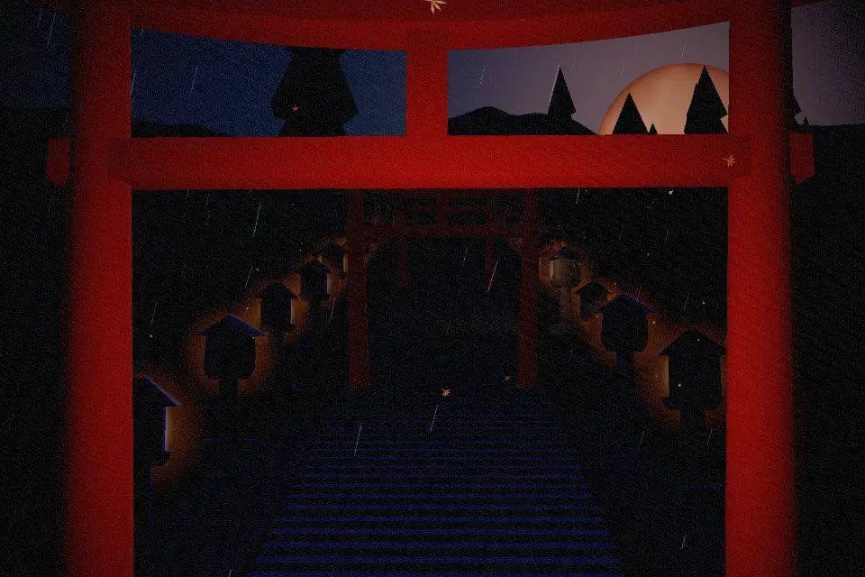
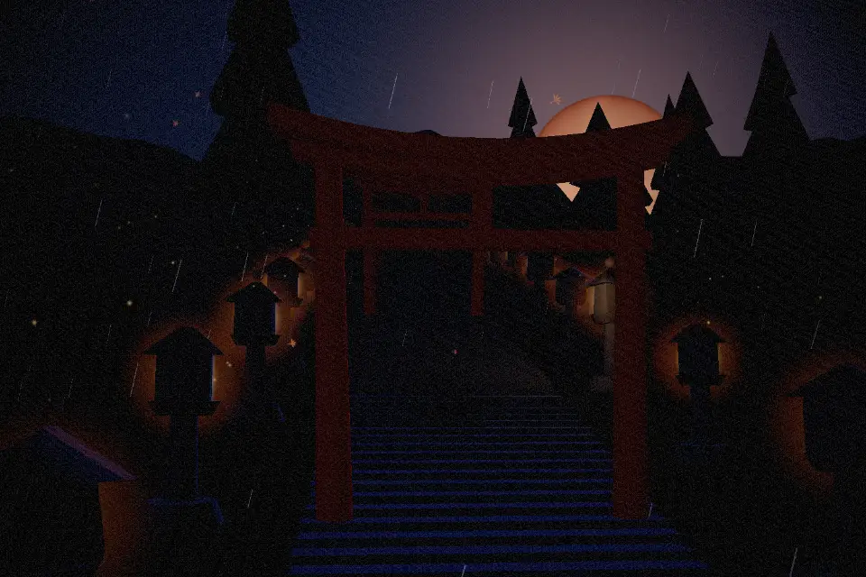
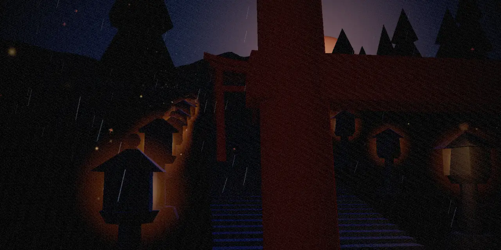
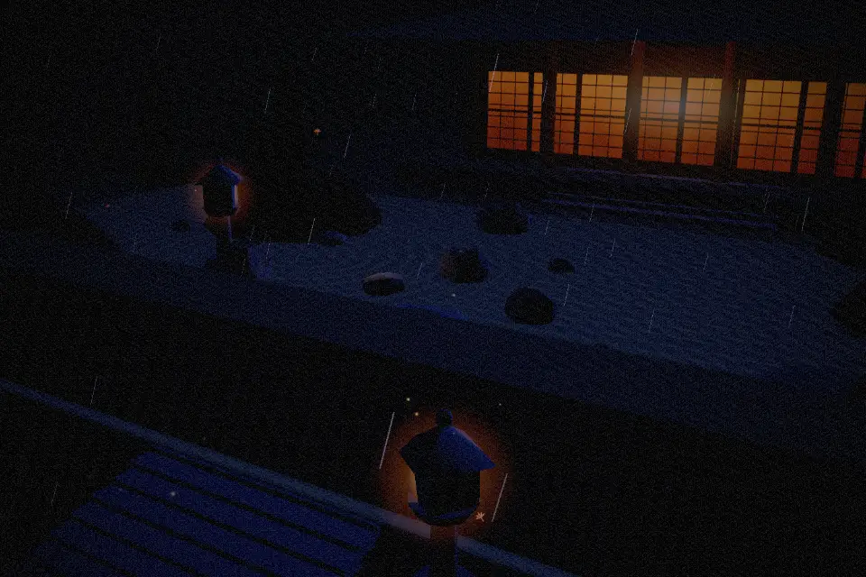
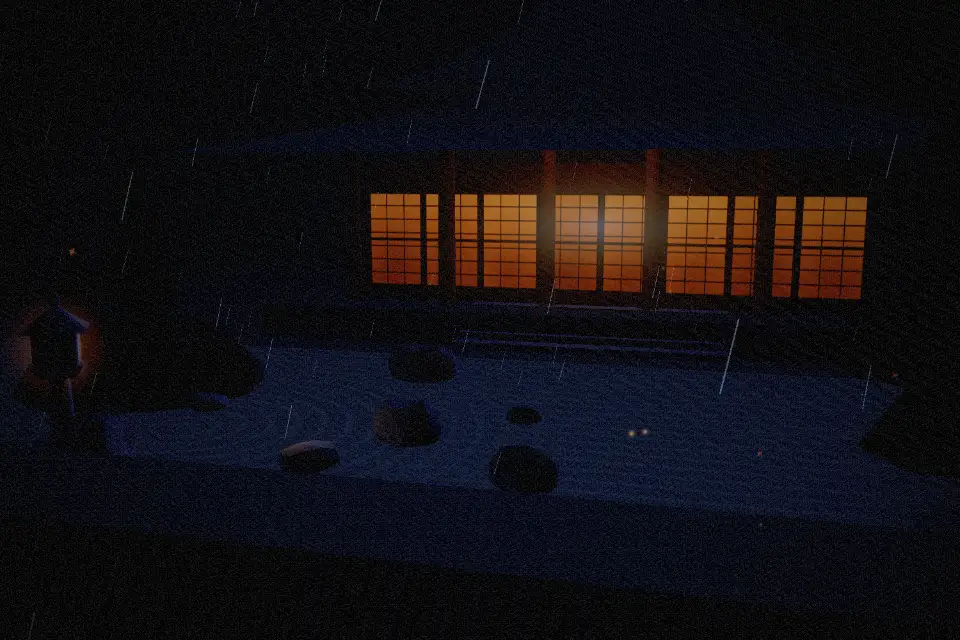
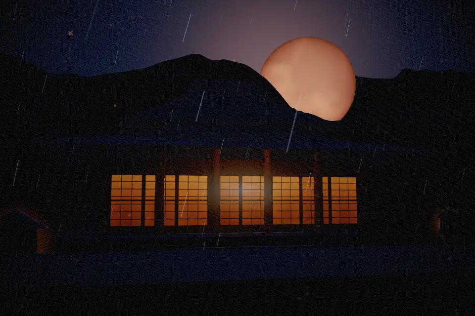
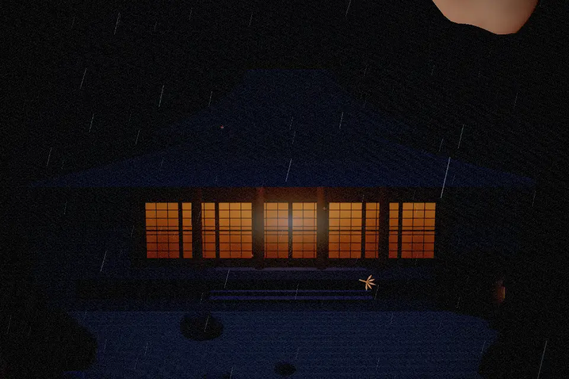
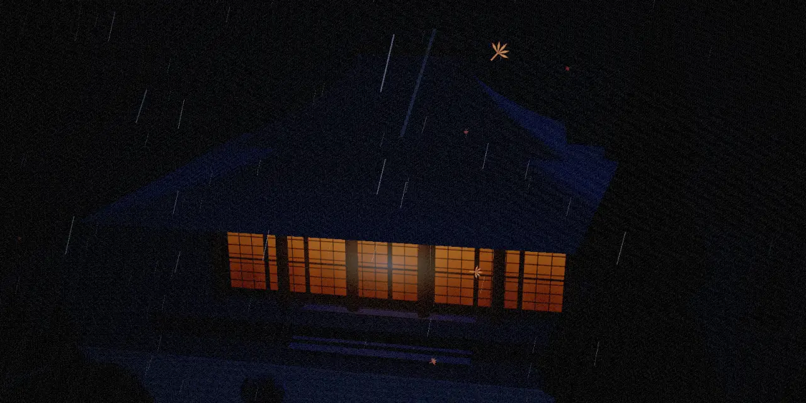

Realtime WebGLFiction, Higashiyama35.0116° N 135.7681° E
Kage
A night walk in five chapters through a mountain temple that does not exist.
Everything you are about to see — the terrain, the gate, the two hundred steps, the rain, the lantern light on wet stone — is generated in the browser, frame by frame, as you scroll. Nothing here was photographed. Nothing here was ever built.
- Chapters
- Five
- Geometry
- Procedural
- Duration
- One scroll
- Hour
- 03:40
Chapter 01Threshold
The gate keeps a record of everyone who passes.
Vermilion, because the colour was believed to hold back decay.
You cross beneath it and the temperature drops four degrees. Behind you the valley road, the last vending machine, the ordinary world with its receipts. Ahead: wet stone, cedar, and a silence so complete it has texture.
The gate is not a door. It marks the seam where one kind of space ends and another begins, and it asks nothing of you except that you notice the crossing.


Chapter 02Ascent
Two hundred steps, each one colder than the last.
The lanterns are lit by someone who has already gone home.
Stone worn concave at the centre — two centuries of feet finding the same line. The rain arrives sideways here, caught in the lantern light for a fraction of a second before it disappears into the moss.
Halfway up you stop, not because you are tired but because the sound has changed. The valley is gone. What remains is water moving somewhere under the stone.

Chapter 03Still Gardens
Gravel raked at dusk still holds the shape of water.
Fifteen stones. From no position can you see all fifteen.
The garden is not a picture of a landscape. It is an argument about attention, made in stone and white grit, and it takes the side of the person willing to stand still for a long time.
At night the rake lines catch the moon and the whole surface reads as shallow water. Step closer and the illusion holds. That is the craft.


Chapter 04Sacred Craft
Every joint cut by hand. No nail enters the hall.
The roof is a held breath, four slopes long.
Cypress bark laid in layers thick as a forearm, trimmed to an edge you could read by. The eaves lift at the corners — not decoration, but the shape water wants to leave by.
Inside, paper. Shoji glow the colour of a lamp seen through a closed eyelid, and the whole hall becomes a lantern that happens to be a building.


Chapter 05Afterlight
By morning the mountain will deny all of it.
The moon goes down the way a lamp is carried out of a room.
Mist fills the stair from the bottom up. The gate is somewhere below it, still vermilion, still keeping its record. The lanterns burn down to a colour with no name.
You turn back once. The hall is already a shape rather than a building, and then it is only a darker part of the dark.
